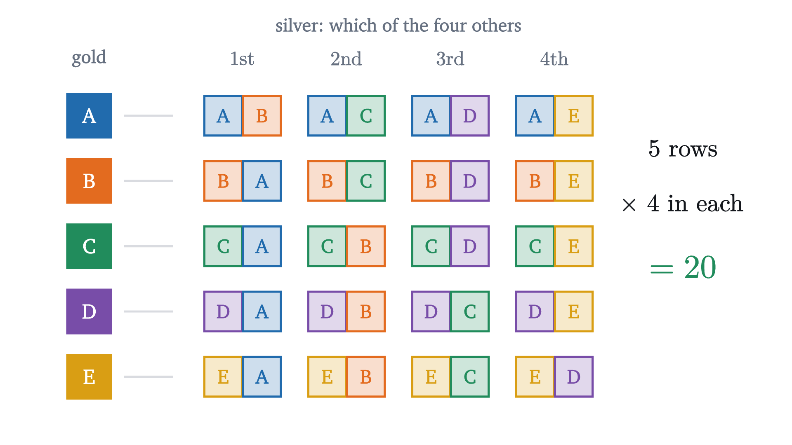
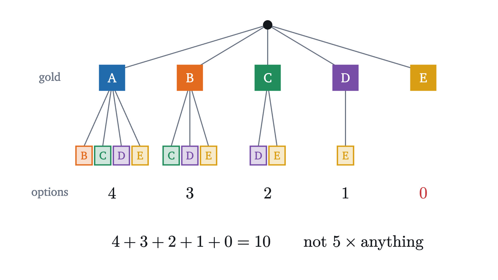
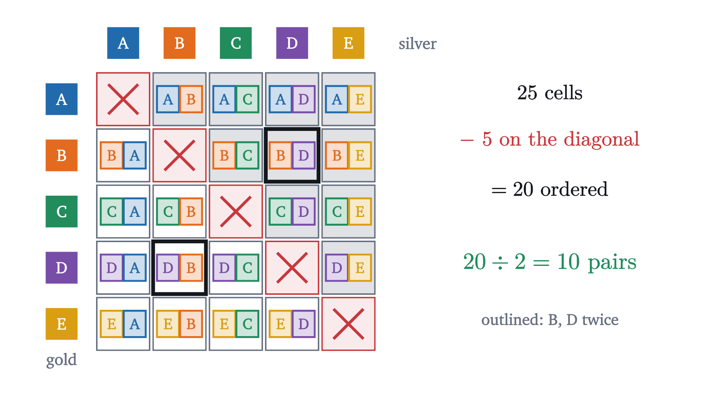
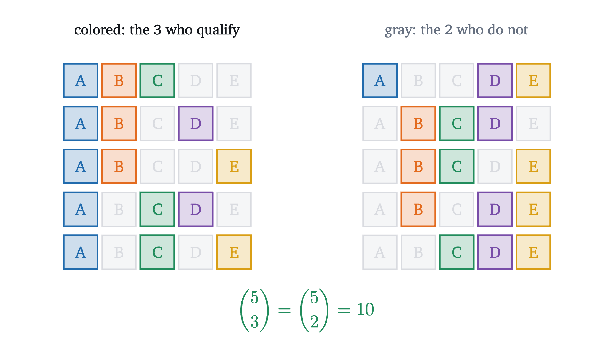

Permutations and combinations: counting without listing
Five runners and three medals give 60 podiums but only 10 groups of medalists. The product rule, permutations and combinations, each one proved.
Five runners, A, B, C, D and E, line up for a final. Here are two questions about how it can end. Gold, silver and bronze medals are awarded, so how many different podiums are possible? And the top three also qualify for the next round, where nobody cares in what order they finished today, so how many different groups of three qualifiers are possible?
Both can be answered by writing out a list, and it is worth starting one to see what goes wrong. ABC, ABD, ABE, ACB, and by the twentieth entry you are no longer sure whether ADB is already there. The answers are 60 and 10. A list that long is easy to get wrong and tells you nothing about what happens with eight runners, or with fifty-two cards. We want a way to get both numbers, and the factor of 6 between them, without listing anything.
Two medals first
Start with a smaller race for medals: gold and silver only. Gold can go to any of the 5 runners. Once it has, silver can go to any of the 4 who are left. Lay the outcomes out with one row for each gold medalist.

There are 5 rows with 4 entries each, so there are $5 \times 4 = 20$ outcomes. Look at what the multiplication used. The rows do not contain the same silver medalists: row A lists B, C, D, E, and row B lists A, C, D, E. What the rows share is their length, and their length is all that the count needs.
Pause and try
Now add the bronze medal. Predict the number of podiums, and say what has to be true of the 20 gold and silver outcomes for your method to be justified.
Show answerHide answer
Each of the 20 gold and silver outcomes leaves 3 runners for bronze. Which three depends on the outcome, but there are always exactly three. So the podiums form 20 rows of 3, and there are $20 \times 3 = 60$.
The product rule
The same count can be drawn as a tree, where each level is one decision.
Each level multiplies the number of branches by the number of options at that level, and it can do so because every branch at one level splits into the same number of branches at the next. Stated with care, the principle is this.
For the two medals, $S$ is the set of pairs (gold, silver), with $m = 5$ and $n = 4$. The phrase “each of them is paired with exactly $n$” is the equal row lengths. The theorem does not ask the second entries to be the same from row to row.
The rule extends to any number of decisions. A podium is a triple, and we can regard it as a pair whose first entry is the (gold, silver) outcome and whose second entry is the bronze medalist. There are 20 first entries, each paired with exactly 3 second entries, so there are 60 triples. Repeating this, a process of $k$ decisions with $n_1$ options for the first, $n_2$ for the second whatever the first was, and so on, has $n_1 n_2 \cdots n_k$ outcomes. (Made formal, “repeating this” is a proof by induction on the number of decisions.)
The hypothesis matters. Change the rules so that silver must go to a runner who comes later in the alphabet than the gold medalist.

Now gold for A leaves four options and gold for E leaves none. There is no single $n$, so there is nothing to multiply by, and the honest count is the sum $4 + 3 + 2 + 1 + 0 = 10$. Before multiplying, check that the number of options at a step is the same whatever came before.
Arrangements in order
The podium count generalizes directly, and the general objects have names.
A podium is a 3-permutation of the five runners, and a complete finishing order is a permutation of them.
For the runners, $P(5, 3) = 5 \cdot 4 \cdot 3 = 60$ and also $\frac{5!}{2!} = \frac{120}{2} = 60$. The whole field can finish in $5! = 120$ orders. Factorials grow quickly: $10! = 3{,}628{,}800$, and a deck of 52 cards has $52!$ orders, a number with 68 digits.
When order does not matter
Now the second question. A group of three qualifiers is a set, and the set $\{A, C, E\}$ is the same group as $\{E, A, C\}$. The product rule counts ordered things, so it cannot be applied to sets directly. Again start small, with groups of two.
Pause and try
There are 20 ordered outcomes for gold and silver. How many different pairs of medalists are there, if we no longer care which of the two got gold? In the array of 20, how often does the pair B and D occur?
Show answerHide answer
The pair occurs twice, as (B, D) and as (D, B). The same is true of every pair, so the 20 ordered outcomes consist of 10 pairs, each listed twice.

Dividing by 2 was legitimate for one reason: every pair appears the same number of times. For three qualifiers the same question has to be asked of the 60 podiums.
Pause and try
How many of the 60 podiums consist of the runners A, C and E in some order? Would the count differ for B, D and E? Use your answers to find the number of groups of three.
Show answerHide answer
Ordering A, C, E is itself a podium problem with three runners: $3 \cdot 2 \cdot 1 = 6$ orders. Nothing in that count depends on which three runners they are, so every group of three accounts for exactly 6 podiums, and there are $60 / 6 = 10$ groups.
This is what the animation at the top of the page carries out for all ten groups at once. Here is the general statement.
The step that carries the weight is “exactly $k!$ for every $T$”. If the groups had different sizes, division would give nonsense, as the product rule did when the branches were uneven.
One identity, two proofs
Pause and try
Compute $\binom{5}{2}$ and $\binom{5}{3}$ from the formula. Then explain the result without any formula.
Show answerHide answer
$\binom{5}{2} = \frac{5 \cdot 4}{2} = 10$ and $\binom{5}{3} = \frac{5 \cdot 4 \cdot 3}{6} = 10$. Choosing the three runners who qualify is the same decision as choosing the two who do not.

Both proofs are complete, and they do different jobs. The algebra confirms the identity and gives no reason for it. The counting argument never mentions a factorial: it shows the two numbers count the same decisions. An argument of this kind, which proves an equation by counting one collection in two ways or by matching two collections, is called a combinatorial proof.
Here is a second identity, where the counting argument also suggests the statement. Suppose the three qualifiers must name one of themselves captain. We can pick the group and then its captain, in $10 \times 3$ ways. Or we can pick the captain from all five runners and then the two who join them from the remaining four, in $5 \times \binom{4}{2} = 5 \times 6$ ways.
Nothing here is special to 5 and 3.
Worked examples
Where the formulas stop
Each formula answers one kind of question, and neighboring questions have different answers.
Repetition allowed. If a runner could win more than one medal, each of the three medals would have 5 options regardless of the others, and the product rule would give $5^3 = 125$. In general there are $n^k$ ordered lists of length $k$ from $n$ objects when repeats are allowed. The formula $P(n, k)$ is for lists without repeats.
The ends of the range. With $k = 0$ there is one list, the empty one, and one subset, the empty set, so $P(n, 0) = \binom{n}{0} = 1$. The factorial formula agrees only because $0!$ was defined as 1, and that is the reason for the definition. With $k > n$ there are no lists without repeats and no subsets. The product $n(n-1)\cdots(n-k+1)$ then contains the factor $0$, while the form $\frac{n!}{(n-k)!}$ is meaningless there, which is why the theorems assume $k \le n$.
Objects that are not distinct. The word LEVEL has 5 letters but fewer than $5!$ arrangements, because swapping its two L’s changes nothing. Problem 6 handles it with the same division idea.
Stepping back
Two ideas did all the work. The product rule counts ordered outcomes built by a sequence of decisions, provided the number of options at each decision does not depend on the earlier ones. The division step converts an ordered count into an unordered one, provided every unordered object was counted the same number of times. Both provisos are the place to look when a count comes out wrong.
The numbers $\binom{n}{k}$ satisfy many identities, and the two-way counting used here is the standard way to find and prove them. Arranged in a triangle, they obey a simple addition rule, which is the subject of the lesson on Pascal’s triangle.
Check yourself
A class of 10 students elects a president and a vice-president (different people). How many outcomes are possible?
Problems
The first three use the formulas directly. The next four need a choice of method or an explanation. The last two extend the lesson.
Problem 1
Seven different books are on a desk. (a) In how many ways can three of them be lined up on a shelf? (b) In how many ways can three of them be chosen to take on a trip?
Show solutionHide solution
(a) The shelf has an order, so this is $P(7, 3) = 7 \cdot 6 \cdot 5 = 210$. (b) A choice is a set, and each set of three books was counted $3! = 6$ times in (a), so the answer is $\binom{7}{3} = 210 / 6 = 35$.
Problem 2
Ten people meet, and every two of them shake hands once. How many handshakes take place?
Show solutionHide solution
A handshake is a set of two people, so the count is $\binom{10}{2} = \frac{10 \cdot 9}{2} = 45$. The product $10 \cdot 9 = 90$ counts each handshake twice, once from each side.
Problem 3
A PIN is a list of four digits, each from 0 to 9. How many PINs are there, and what fraction of them have four different digits?
Show solutionHide solution
Each digit has 10 options regardless of the others, so there are $10^4 = 10{,}000$ PINs. With four different digits the options are 10, 9, 8, 7 in turn: $P(10, 4) = 5040$. The fraction is $\frac{5040}{10000} = 0.504$, so just over half of all PINs have no repeated digit.
Problem 4
Compute $\binom{100}{98}$ without a calculator, and explain in terms of choosing why $\binom{n}{1} = \binom{n}{n-1} = n$.
Show solutionHide solution
By symmetry $\binom{100}{98} = \binom{100}{2} = \frac{100 \cdot 99}{2} = 4950$. Choosing one object from $n$ can be done in $n$ ways, one for each object. Choosing $n - 1$ objects is the same as choosing the single object to leave out, which can again be done in $n$ ways.
Problem 5
A committee of 4 is to be formed from 6 men and 5 women. (a) How many committees have exactly two women? (b) How many have at least one woman?
Show solutionHide solution
(a) Choose the two women in $\binom{5}{2} = 10$ ways and, whichever they are, the two men in $\binom{6}{2} = 15$ ways. The product rule applies because the number of ways to choose the men does not depend on the women chosen, and each committee arises from exactly one such pair of choices: $10 \cdot 15 = 150$. (b) There are $\binom{11}{4} = \frac{11 \cdot 10 \cdot 9 \cdot 8}{24} = 330$ committees and $\binom{6}{4} = 15$ with no woman, so $330 - 15 = 315$ have at least one. Check by cases: $5 \cdot 20 + 10 \cdot 15 + 10 \cdot 6 + 5 = 100 + 150 + 60 + 5 = 315$.
Problem 6
How many different arrangements are there of the letters of the word LEVEL? Justify the division you use.
Show solutionHide solution
Make the letters temporarily distinct: $L_1, E_1, V, E_2, L_2$. These five distinct symbols have $5! = 120$ arrangements. Erasing the subscripts sends each of these to an arrangement of LEVEL. A given arrangement of LEVEL comes from exactly $2! \cdot 2! = 4$ labeled arrangements, since the two L’s can be labeled in 2 ways and, independently, the two E’s in 2 ways. Every bundle has the same size 4, so the number of arrangements is $120 / 4 = 30$.
Problem 7
A student is asked how many 5-card hands from a standard 52-card deck contain at least one ace, and writes: “Choose an ace, 4 ways. Then choose any 4 of the other 51 cards, $\binom{51}{4} = 249{,}900$ ways. Answer: $999{,}600$.” Find the error and the correct count.
Show solutionHide solution
The method counts pairs (a marked ace, four other cards). A hand with two aces arises from two such pairs, since either ace could be the marked one, and a hand with three or four aces arises three or four times. So hands are not counted equally often and the total is too large. Correctly: there are $\binom{52}{5} = 2{,}598{,}960$ hands, and $\binom{48}{5} = 1{,}712{,}304$ of them avoid all four aces, so $2{,}598{,}960 - 1{,}712{,}304 = 886{,}656$ contain at least one ace.
Problem 8
Prove in two ways, by counting and by algebra, that for integers $0 \le m \le k \le n$,
Show solutionHide solution
By counting. From $n$ people, form a committee of $k$ and, inside it, a subcommittee of $m$. Choosing the committee first gives $\binom{n}{k}$ committees, each with exactly $\binom{k}{m}$ subcommittees: $\binom{n}{k}\binom{k}{m}$ outcomes. Choosing the subcommittee first gives $\binom{n}{m}$ subcommittees, each of which is completed to a committee by choosing the other $k - m$ members from the remaining $n - m$ people, in exactly $\binom{n-m}{k-m}$ ways. Each outcome (a committee together with a subcommittee) arises exactly once either way, so the two products are equal. With $m = 1$ this is the captain identity. By algebra.
Numerical check with $n = 5$, $k = 3$, $m = 2$: $10 \cdot 3 = 30$ and $10 \cdot 3 = 30$.
Problem 9
Five people sit down at a round table with five identical chairs. Two seatings count as the same if one can be turned into the other by rotating everybody around the table. How many different seatings are there? Generalize to $n$ people.
Show solutionHide solution
Number the chairs. There are $5! = 120$ ways to seat the people in numbered chairs. Rotating everyone by one chair, two chairs, and so on gives 5 numbered seatings (including the original) that all count as the same round-table seating, and these 5 are different from one another because each rotation moves a given person to a different chair. So the 120 numbered seatings fall into bundles of exactly 5, and there are $120 / 5 = 24$ seatings. For $n$ people the same argument gives $n!/n = (n-1)!$. Another way to see it: seat one person anywhere, which fixes the rotation, and arrange the other $n - 1$ people in the remaining chairs in $(n-1)!$ ways.